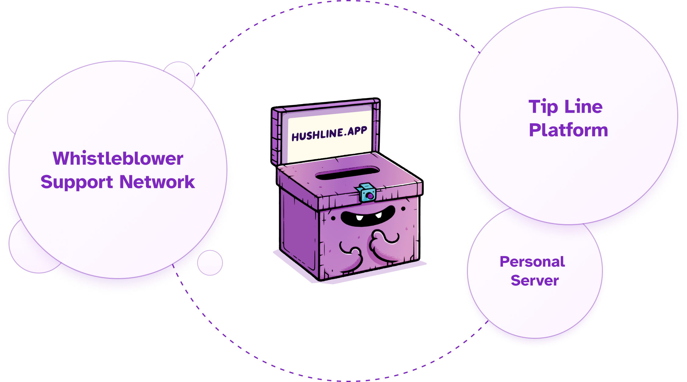

Welcome to Hush Line
Hush Line is a network of organizations and individuals who help whistleblowers and provides tip lines for secure and anonymous communication.
If you need a confidential reporting system—lawyers, journalists, employers, educators, or more—you can create a free account, and when you add an encryption key, you can start receiving secure messages!
Getting Started with Hush Line
Hush Line is intended to be a background service for you - add your key, then forward your messages to your desired email address, and never have to worry about logging back into the Hush Line platform again. We recommend using Proton Mail since we're built on the same encryption technology - PGP or Pretty Good Privacy. PGP is an open protocol providing strong encryption that's been around for decades and is trusted by governments and activists alike. When you use Proton Mail as described below, your anonymous Hush Line messages will be automatically delivered to and decrypted in your Inbox - no logging back into the Hush Line platform necessary. And since your messages are encrypted with a key to which only you have access, they are unreadable to anyone but you 💪.
Contents
Option 1: Proton (Recommended)
Option 2: Mailvelope
Option 1: Proton
Step 1: Sign up for Hush Line & Proton
Go to hushline.app and proton.me and sign up for your accounts if you haven't already.
Step 2: Import Your Key
In your Hush Line settings, navigate to the Email & Encryption tab. You'll notice that email forwarding is disabled until you add an encryption key.
In the Message Encryption section, you'll see a Proton key search input. To import your key, add the email address you just created.
Step 3: Mail Forwarding
Now that you've added your PGP key from Proton you can add a forwarding address. Add your Proton email address.
Step 4: Send a Message
Click on Profile in the Hush Line global navigation. Enter a message into your form, and when you submit it, you'll see it encrypted in your browser before it sends - this ensures your message is end-to-end encrypted!
Step 5: Check Your Email
Go back to your Proton account and, if necessary, refresh your Inbox. You should see an email from notifications@hushline.app appear. Click on it, and you'll see your automatically decrypted message! If you go back to Hush Line and click Inbox, you'll see the same message, but it'll be encrypted and unreadable since your key to decrypt the message only exists on Proton.
🎉 Congratulations, you're ready to start receiving encrypted and anonymous Hush Line messages!
Option 2: Mailvelope
Step 1: Get the Extension
To set up Mailvelope for Chrome or Firefox, follow the instructions found here: https://mailvelope.com/en/help
Step 2: Create a key
In the Setup dashboard, click on the "Generate key" button. Add a name for your key, your email address, and a strong password. Before clicking "Generate," click on the "Advanced" button. In the Algorithm picklist, choose "ECC - Curve25519". This algorithm is more efficient than traditional RSA encryption while providing a similar level of security. Now, generate your key!
Once your key is created, click on it from the dashboard, then select "Export" in the "Public" tab and "Copy to clipboard."
Select the Email & Encryption tab in your Hush Line settings, and paste your key into the Public PGP Key textarea.
Step 3: Authorize the Hush Line domain
With Hush Line open, click the Mailvelope icon and select "Authorize this domain." Click "Ok" when the dialog opens. You'll be able to see tips.hushline.app in the authorized domains list.
Step 4: Send and read a message!
Let's send a test message! In the header, click "Profile." Enter some text and click "Send Message." If you haven't disabled JavaScript, you'll see it encrypted in the browser before it submits.
Go to "Inbox" to see the message in the app. You may have to enter the password you set when creating your key in Mailvelope.
🎉 Congratulations, you're ready to start receiving encrypted and anonymous Hush Line messages!
Hush Line Threat Model
ℹ️ This is a living document and is subject to change as the app evolves.
Adapted from the threat/risk models published by Cwtch, SecureDrop, and Pond.
Introduction
Hush Line is a secure communication platform designed with a strong focus on privacy and anonymity. This document outlines the threat model for Hush Line, highlighting potential threats, the data Hush Line collects, how it is secured, and what users can expect in terms of privacy and security.
Users
| User Type | Goal |
|---|---|
| Submitter | Individual who sends a message. |
| Receiver | Individual or organization representative who reads messages. |
| Verifier | Staff member who verifies account owners (journalists, public figures, businesses). |
| Service Provider | Individual or organization who provides Hush Line services. |
| Server Admin | Individual who maintains the server operating Hush Line. |
Adversaries
| User Type | Goal |
|---|---|
| Passive Observer | Passively logs client IP addresses and their corresponding inbound/outbound connections (school/work networks, ISPs, DNS providers). |
| Active Observer | Targets specific connections. |
| Passive Attacker | Scans the internet for vulnerabilities to take advantage of. |
| Active Attacker | Seeks persistence, exploitation of known vulnerabilities, and seizure of physical equipment. |
Assumptions
The following assumptions are accepted in the threat model of the Hush Line product:
Assumptions About the Individual Submitting a Message
- The individual submitting a message does so in good faith.
- The individual submitting a message wants to remain anonymous against a network observer, forensic analysis, or to Hush Line servers.
- The individual submitting a message is accessing the official Hush Line site.
Assumptions About the Person or Organization Receiving a Message
- The receiver operates Hush Line in good faith.
Assumptions About the Hush Line Server
- The server is operated in good faith.
- The server is single-use and configured with the official scripts on the GitHub main repo.
- The server has no other software other than what is required for the operation of Hush Line.
Assumptions About the Source’s Computer
- The computer has an updated version of a popular browser including Chrome, Firefox, or Safari, and for anonymous connections, an updated version of Tor Browser.
- The computer is not compromised by malware.
Assumptions About Science & Design
- Science & Design wants to preserve the anonymity of its sources.
- Science & Design acts in the interest of allowing sources to submit messages, regardless of their contents.
- The users of the system, and those with physical access to the servers, can be trusted to uphold the previous assumptions unless the entire organization has been compromised.
- Science & Design is prepared to push back on any and all requests to compromise the integrity of the system and its users, including requests to deanonymize sources, block message submissions, or hand over encrypted or decrypted submissions.
Assumptions About the World
- The security assumptions of
bcryptwith randomly generated salts are valid. - The security/anonymity assumptions of Tor and the Onion service protocol are valid.
- The security assumptions of Hush Line dependencies, specifically Debian, the Linux kernel, application packages, and application dependencies, are valid.
Other Assumptions or Factors
- The level of press freedom may vary in both geography and time.
- The number of daily Tor users in a country can greatly vary.
Threats and Mitigations
Server Compromise
- Impacts: If an attacker obtains the database encryption key, its contents may be decrypted. Still, we do not require PII. If you have SMTP delivery configured, your forwarding address will be visible. If you haven't added your own public PGP key to your account, message content will be visible.
- Mitigation: Hush Line does not require PII, including an email address, to use the service. To protect message content, users are encouraged to add their own PGP key. We store data encrypted in our database, remove IP addresses and country codes from access logs, and do not store timestamps or associate member data in any way. The database key is never hardcoded and is stored in environment variables, removing the chance of exposure to the source code.
Network Observers
- Impacts: Adversaries who monitor network connections to our server can see your IP address and the domain you're visiting.
- Mitigation: All data in transit is encrypted using TLS, and users are encouraged to access Hush Line via Tor for additional anonymity. This prevents network observers from deciphering the content or metadata of communications.
Account Compromise
- Impacts: Disruption of Hush Line usage, impersonation which could lead to reputational harm or other damages.
- Mitigation: Strong password policies, optional 2FA, and secure password reset mechanisms are in place to protect user accounts. Users are educated on best practices for maintaining account security.
Legal and Coercive Pressure
- Impacts: Science & Design, Inc. and Hush Line must comply with legitimate legal requests, which could result in the forfeiture of data that includes your username, SMTP information, public PGP key, or other information you provide to Hush Line. No PII is required to use the Hush Line service, but if you've donated to our Open Collective or purchased anything from our Shopify store, potentially identifying information, including your shipping and billing address, name, email address, and IP address, could be tied back to you with sufficient analysis.
- Mitigation: Hush Line is designed to hold minimal information that could be of interest in legal contexts.
Verification System
Hush Line employs a verification system to ensure that users can trust the source of communication. This system is particularly important for users who are public figures or have a wide audience. The verification system includes:
Verified Accounts
- Display of Verification Status: Hush Line indicates verified accounts with a distinctive badge (⭐️ Verified Account). This visual indicator helps users distinguish authentic accounts from potential impersonators, reducing the risk of phishing attacks.
- Data Retention: The information used to verify you is never saved, even temporarily.
User Education
Encryption Awareness
- Encryption Indicators: The platform informs users whether their messages will be encrypted. For accounts with a public PGP key, messages are encrypted, ensuring that only the intended recipient can decrypt and read them. This feature is highlighted through messages on the submission form, emphasizing the importance of encryption for sensitive information.
User Guidance
- Informative Messages for Senders and Receivers: Hush Line educates its users about the significance of encryption and the steps required to ensure message confidentiality. This includes prompts for receivers to add a public PGP key if they haven't already, and notifications for senders about the encryption status of their message.
Conclusion
Hush Line's threat model acknowledges the variety of adversaries that users may face and implements a robust security architecture to mitigate these risks. By encrypting data at rest, minimizing data collection, and educating users on security practices, Hush Line aims to offer a secure and private platform for communication.
Hush Line Managed Service
The hosted version of Hush Line is the first free and open-source anonymous tip-line-as-a-service and the easiest way to get started. It's as simple as signing up, and you'll have a way for anyone to send you a private message. It's for those needing one or more tip lines without worrying about managing and maintaining technical infrastructure.
Contents
Register & Login
First, register and log in to your account at https://tips.hushline.app/register.
To protect your privacy, we don't require any PII, including your email address or phone number.
Verified Accounts
Our verified accounts feature is designed to ensure that messages reach their intended recipients. Verified accounts are specially available for:
- 🕵️ Journalists - Reporters, correspondents, and investigative journalists.
- 📰 Newsrooms - Official accounts for newspapers, TV stations, or online news portals.
- ✊ Activists - Individuals or groups advocating for social, environmental, or political causes.
- 📸 Public Figures - Politicians or other noteworthy public individuals.
- 📊 Businesses - Companies, small businesses, or startups aiming to communicate with their audience.
Requesting Verification
To ensure your account is recognized as authentic, users belonging to the categories listed above can apply for verification. Follow these steps to initiate the verification process:
-
First, add a verified URL to your Hush Line profile: In Hush Line settings you can add up to four additional fields - a URL, Signal username, phone number, or anything else. To verify a URL, add it to your Hush Line extra fields using
https://-https://scidsg.org, for example. Then, add a link to your Hush Line address on the page for that URL withrel="me"in the markup. For example:<a href="https://tips.hushline.app/to/scidsg" rel="me" >Send an anonymous tip!</a >a. Alternatively, verify a Hush Line address using Mastodon: Add your Mastodon address to your Hush Line profile, then add your Hush Line address to your Mastodon profile. You'll see your Hush Line address verify on Mastodon.
-
Set your Display Name: To help guard against abuse, our verification system is built so that if a verified user changes their username or display name, they'll lose their verified status and need to initiate the process again. This feature is intended to eliminate the risk of a user with a verified account changing their information to impersonate another person or organization.
-
Send a Message: Use the contact form in the app to reach out to us to request verification!
Sending Messages
When you log in to your account, click on the Profile link at the top of the screen. You can publicly share the URL for this page wherever you're advertising your tip line. Whistleblowers will use this address to send anonymous messages. To send a message to the Hush Line admin account, someone would visit https://tips.hushline.app/to/admin.
Reading Messages
New users are greeted by their empty inbox.
When you receive a message, they'll appear here.
Message Encryption
By default, Hush Line requires a PGP key to receive messages, making your messages only readable by you.
Settings
Profile Settings
Display Name
Users can set a human-readable display name so that someone submitting a message can see "Submit a message to Science & Design" rather than "Submit a message to scidsg". As a security measure, if a user changes their display name after verification, they'll lose that status and must re-verify their account.
Public Directory
Users may opt in to being listed on our public directory, making it easy for anyone to find their Hush Line account.
Verified Addresses
In Hush Line settings you can add up to four additional fields - a URL, Signal username, phone number, or anything else. To verify a URL, add it to your Hush Line extra fields using https:// - https://scidsg.org, for example. Then, add a link to your Hush Line address on the page for that URL with rel="me" in the markup. For example:
<a href="https://tips.hushline.app/to/scidsg" rel="me"
>Send an anonymous tip!</a
>
Authentication
Two-Factor Authentication
To improve account security, users can enable two-factor authentication, making account compromises, even in the event of a password leak, impossible.
Change Password
Users can change their password when needed.
Change Username
Changing your username is easy but can lead to confusion for end-users, especially for well-known organizations.
Verification
Like when changing your display name, when you change your username, you'll lose verification and need to go through the process again.
Email & Encryption
Before users can enable message forwading, a PGP key must be uploaded.
Email Delivery
We use Riseup.net for our email forwarding provider. All you need to do is add an email address and you'll get new secure messages delivered directly to your email inbox.
Encryption
Proton
Proton users can easily import their public PGP key by entering their email address. We do not store your email address.
PGP Key
A user may manually add their PGP key if not a Proton user.
Advanced
Delete Account
Easily and permanently delete your account whenever you want.